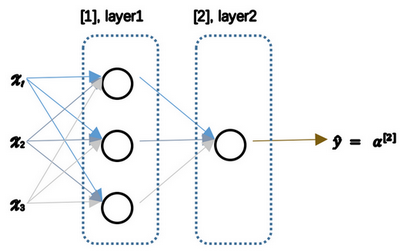

浅层神经网络
神经网络概述
接下来将学习如何实现一个神经网络
前面讨论了逻辑回归：

如上所示，首先需要输入特征 \(x\) ，参数 \(w\) 和 \(b\) ，通过这些就可以计算出 \(z\) :
\begin{equation} \left. \begin{array}{c} x \\ w \\ b \end{array} \right\} \Longrightarrow z = w^Tx + b \Longrightarrow \alpha = \sigma(z) \Longrightarrow \mathbf{L}(a, y) \end{equation}接下来使用 \(z\) 就可以计算出 \(\alpha\) 。把符号换为表示输出 \(\hat{y} \Longrightarrow \alpha = \sigma(z)\), 然后可以计算出损失函数 \(\mathbf{L}(a, y)\)
神经网络如下图：把许多 \(\mathbf{sigmoid}\) 单元堆叠起来。对于图中的节点，它包含了之前讲的计算的两个步骤：首先计算出值 \(z\) ，然后通过 \(\sigma(z)\) 计算值 \(\alpha\)

在这个神经网络对应的3个节点：首先计算第一层网络中的各个节点相关的数 \(z^{[i]}\) , 接着计算 \(\alpha^{[1]}\) ，在计算下一层网络会使用符号 \(^{[m]}\) 表示第 \(m\) 层网络中节点相关的数，这些节点的集合被称为第 \(m\) 层网络。这样可以保证不会和之前用来表示单个的训练样本的 \(^{(i)}\) (即使用表示第 \(i\) 个训练样本)混淆； 整个计算过程：
第一层：
\begin{equation} \left. \begin{array}{c} x \\ W^{[1]} \\ b^{[1]} \end{array} \right\} \Longrightarrow z^{[1]} = W^{[1]}x + b^{[1]} \Longrightarrow \alpha^{[1]} = \sigma(z^{[1]}) \end{equation}第二层：
\begin{equation} \left. \begin{array}{c} \alpha^{[1]} = \sigma(z^{[1]}) \\ W^{[2]} \\ b^{[2]} \end{array} \right\} \Longrightarrow z^{[2]} = W^{[2]}\alpha^{[1]} + b^{[2]} \Longrightarrow \alpha^{[2]} = \sigma(z^{[2]}) \Longrightarrow \mathbf{L}(a^{[2]}, y) \end{equation}使用另外一个线性方程对应的参数计算 \(z^{[2]}\) ，再计算\(\alpha^{[2]}\) ，这就是整个神经网络最终的输出，用\(\hat{y}\) 表示网络的输出
在逻辑回归中，通过直接计算得到结果
而这个神经网络中，反复的计算 z 和 a，再计算 a 和 z，最后得到了最终的输出loss function
逻辑回归里是从后向前的计算用来计算导数 \(\mathrm{d} \alpha\), \(\mathrm{d} z\) 。同样，在神经网络中也有从后向前的计算，通过计算 \(\mathrm{d} \alpha^{[2]}\), \(\mathrm{d} z^{[2]}\) ，然后计算 \(\mathrm{d} W^{[2]}\), \(\mathrm{d} b^{[2]}\) 等，从右到左反向计算：
\begin{equation} \left. \begin{array}{c} \mathrm{d} \alpha^{[1]} = \mathrm{d} \sigma(z^{[1]}) \\ \mathrm{d} W^{[2]} \\ \mathrm{d} b^{[2]} \end{array} \right\} \Longleftarrow \mathrm{d} z^{[2]} = \mathrm{d}(W^{[2]}\alpha^{[1]} + b^{[2]}) \Longleftarrow \mathrm{d} \alpha^{[2]} = \mathrm{d} \sigma(z^{[2]}) \Longleftarrow \mathrm{d} \mathbf{L}(a^{[2]}, y) \end{equation}
接下来讲述神经网络的表示
神经网络的表示
下面的神经网络只包含一个隐藏层：

- 首先有输入特征 \(x_1\) , \(x_2\) , \(x_3\) 它们被竖直地堆叠起来，这叫做神经网络的 输入层 ：它包含了神经网络的输入
接下来有另外一层四个结点称之为 隐藏层
在一个神经网络中，使用监督学习训练它的时候，训练集包含了输入也包含了目标输出 隐藏层中的这些中间结点的准确值是不知道到的，也就是说看不见它们在训练集中应具有的值- 最后一层只由一个结点构成，而这个只有一个结点的层被称为 输出层 ，它负责产生预测值
现在再引入几个符号，就像之前用向量 \(x\) 表示输入特征。这里有个可代替的记号用来表示输入特征 \(a^{[0]}\) 。\(a\) 表示 激活 的意思，它意味着网络中不同层的值会传递到它们后面的层中：
- 输入层将 \(x\) 传递给隐藏层，所以将输入层的激活值称为 \(a^{[0]}\)
- 下一层即隐藏层也同样会产生一些激活值，那么将其记作 \(a^{[1]}\)
这里的第一个单元或结点将其表示为 \(a_1^{[1]}\) ，第二个结点的值记为 \(a_1^{[2]}\) 以此类推。所以这里的 \(a^{[1]}\) 是一个规模为 \(4 \times 1\) 的矩阵或一个大小为 4 的 列向量 .z这里有四个结点或者单元，或者称为四个 隐藏层单元 ：
\begin{equation} a^{[1]} = \begin{bmatrix} a_1^{[1]} \\ a_2^{[1]} \\ a_3^{[1]} \\ a_4^{[1]} \\ \end{bmatrix} \end{equation}最后输出层将产生某个数值 \(a\) ，它只是一个单独的实数，所以的 \(\hat{y}\) 值将取为 \(a^{[2]}\) 。这与逻辑回归很相似，在逻辑回归中， \(\hat{y}\) 直接等于 \(a\)
在逻辑回归中只有一个输出层，所以没有用带方括号的上标
但是在神经网络中，将使用这种带上标的形式来明确地指出这些值来自于哪一层
有趣的是在约定俗成的符号传统中，这个例子只能叫做一个两层的神经网络
原因是当计算网络的层数时，输入层是不算入总层数内，所以隐藏层是第一层，输出层是第二层。将输入层称为 第零层

最后，要看到的隐藏层以及最后的输出层是带有参数的，这里的隐藏层将拥有两个参数 \(W\) 和 \(b\) , 将给它们加上上标\(^{[i]}\)( \(W^{[1]}\) , \(b^{[1]}\) ). 表示这些参数是和第一层这个隐藏层有关系的。 \(W^{[1]}\) 是一个\(4 \times 3\) 的矩阵，而 \(b^{[1]}\) 是一个\(4 \times 1\) 的向量
第一个数字4源自于有四个结点或隐藏层单元，第二个数字3源自于这里有三个输入特征
之后会更加详细地讨论这些矩阵的维数，到那时可能就更加清楚了
相似的输出层也有一些与之关联的参数 \(W^{[2]}\) 以及 \(b^{[2]}\) 。从维数上来看，它们的规模分别是 \(1 \times 4\) 以及 \(1 \times 1\) . \(1 \times 4\) 是因为隐藏层有四个隐藏层单元而输出层只有一个单元
下面将更深入地了解这个神经网络是如何进行计算的